a leitura que o cálculo cobra — e que ninguém ensina
A álgebra linear fala do que é linear. O cálculo fala do que é constante — e do que muda quando a gente chega perto de um ponto. São dois assuntos, e o segundo não se apoia no primeiro: ele se apoia em aritmética, álgebra elementar, trigonometria e funções.
E numa quinta coisa, que nenhuma dessas matérias entrega: olhar um desenho no plano e ler nele o comportamento da função. Este seminário existe para pagar essa dívida antes que ela seja cobrada.
Autor · Mateus Felipe Alkimim Pereira
Coautora · Sara Catiele Nogueira Pereira
Orientador · Rosivaldo Antônio Gohnan
A matemática escreve com convenções que quase nunca são ditas em voz alta. Ditas, elas deixam de ser barreira — e você decifra um símbolo novo sem esperar que alguém o apresente.
| \(f\), \(g\), \(h\) | minúscula inclinada — o nome de uma função. Lê-se "efe", "gê", "agá" |
| \(f(x)\) | o valor que sai quando entra \(x\). O parêntese aplica, não multiplica. Lê-se "efe de xis" |
| \(x\), \(y\) | a entrada e a saída — e também os dois eixos do desenho |
| \(a\), \(b\), \(c\) | números fixos que a gente escolhe e não mexe mais: as constantes |
| sen, cos, tg | letra em pé — nome de operação, não letra que vale um número. São as três da trigonometria, e a folha 10 mostra o que cada uma é: um comprimento no círculo |
| \(\pi\), \(\theta\) | letra grega — o que se mede: uma constante do círculo, um ângulo. Nunca é o assunto da folha; é a medida dele |
| \(|x|\) | uma barra: o número sem o sinal. Lê-se "módulo de xis" |
| \(\to\) | "vai para", "tende a" — não é igual, é caminho |
Só do ensino básico. Nada aqui cobra os seminários de geometria, determinantes ou espaços vetoriais: aquele é outro ramo.
Uma função é uma regra que pega um número e devolve outro. Entra \(x\), sai \(f(x)\).
"efe de xis".
A regra pode ser uma conta ("dobre e some um"), uma tabela, ou um desenho. O que a faz uma função é uma exigência só:
Na máquina ao lado a regra é "dobre e some um": entra 3, sai 7. Entra outro número, sai outro — mas o 3 sai 7 sempre.
se você põe o 3 e às vezes sai 7 e às vezes sai 9, aquilo não é função — é bagunça. A exigência parece boba e é ela que segura tudo o que vem depois: sem ela, "para onde a função vai" não teria resposta única.
| domínio | o conjunto das entradas que a máquina aceita |
| imagem | o conjunto das saídas que ela produz |
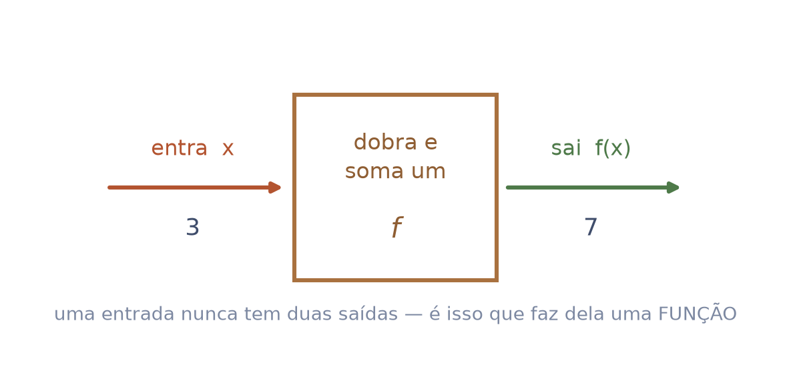
Pegue uma entrada e a saída dela. Isso é um par: \((x,\; f(x))\). Agora marque esse par num plano — a entrada medida na horizontal, a saída na vertical.
"o par xis, efe de xis".
Faça isso com todas as entradas. O rastro que os pontos deixam é o gráfico da função.
| plano cartesiano | os dois eixos cruzados. O horizontal é o \(x\); o vertical, o \(y\). Onde eles se cruzam é a origem |
| gráfico | o desenho formado por todos os pares da função |
a regra, a tabela e o desenho são a mesma função em três roupas. Trocar de roupa não muda a função — muda o que você consegue enxergar dela. E é a terceira roupa que este seminário vem treinar.
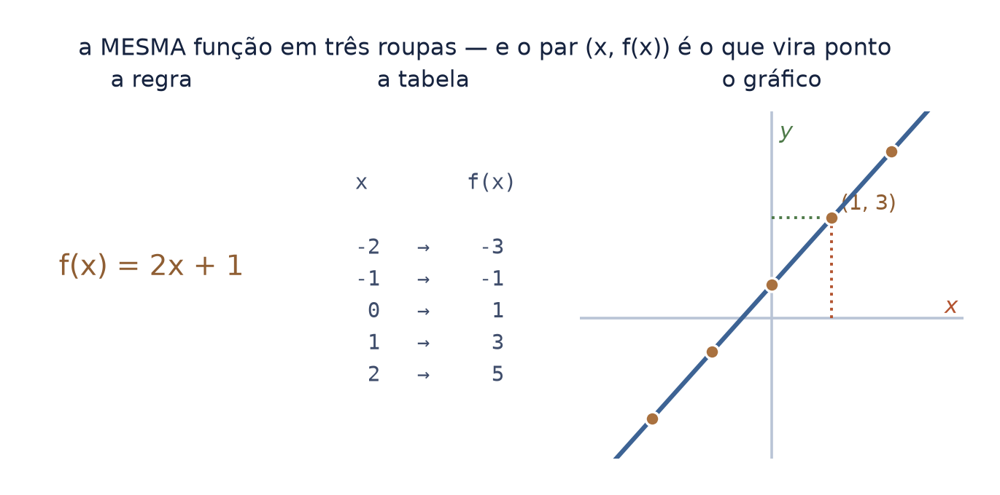
Andando da esquerda para a direita — isto é, com \(x\) crescendo — o desenho só pode fazer três coisas:
guarde a terceira. Constante é a palavra de que o cálculo inteiro trata: o que não muda, o que muda devagar, o que muda depressa. Ver "parado" num desenho é o primeiro passo para entender o que uma derivada mede.
Uma mesma função pode subir num trecho, descer noutro e ficar parada num terceiro. Comportamento é sempre local: pergunta-se "onde?".
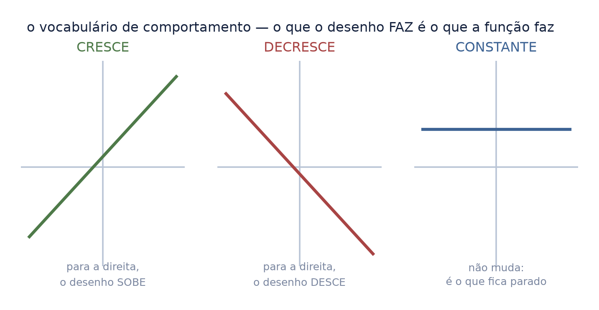
Nem todo desenho é um traço liso e inteiro. Os defeitos têm nome, e cada um deles é um assunto dos próximos seminários:
| buraco | o traço segue, mas um ponto não existe. A função não aceita aquela entrada |
| salto | chegando pela esquerda o desenho aponta um valor; pela direita, outro. Falta um pedaço no meio |
| bico | sem furo e sem salto — mas ali o traço vira de repente, e não há uma inclinação única |
estes três desenhos são o motivo de o cálculo existir. Buraco e salto são o assunto do próximo seminário — limite e continuidade. O bico é o que impede uma derivada de existir.
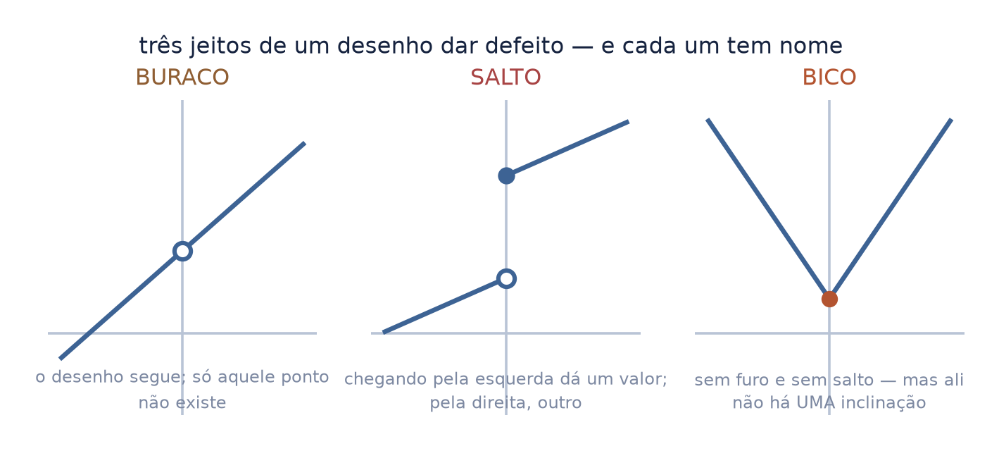
Duas coisas que o desenho faz longe e perto, e que a conta sozinha não mostra:
"assíntota" — do grego, "que não se encontra".
as duas são a mesma pergunta em lugares diferentes: para onde isto está indo? — feita ao longe, ou feita perto de um ponto. Quando essa pergunta ganhar nome, o nome vai ser limite.
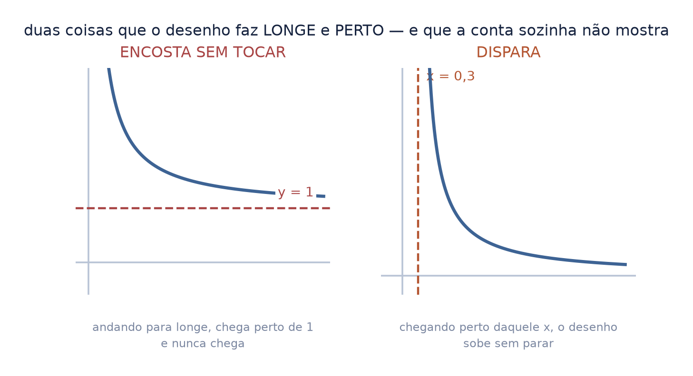
Saber a definição de crescente não é o mesmo que ver crescente. A segunda coisa é a que o cálculo cobra, e só se ganha praticando — como ler em voz alta.
Para cada desenho ao lado, responda sem conta nenhuma:
Todos os seis são funções que aceitam qualquer número e devolvem um número — as mais comuns, e as que este arco vai usar.
não há resposta a decorar aqui. O ganho é o reflexo: daqui a dois seminários, quando aparecer \(\operatorname{sen}(x)/x\) com um buraco em zero, você já vai ter visto um buraco antes — e a folha não vai precisar parar para explicar.
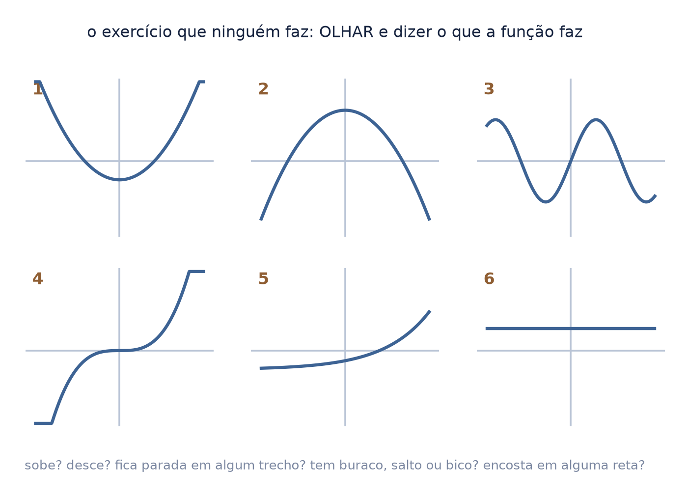
A álgebra elementar não é um pré-requisito decorativo: ela muda o domínio, e o domínio aparece no desenho.
"efe de xis é xis mais dois"; "gê de xis é xis ao quadrado menos quatro, sobre xis menos dois".
Na figura, o círculo vazado marca o ponto que não existe: é a convenção para "aqui o desenho tem um buraco". Círculo cheio seria ponto que existe.
Fatorando, \(x^2 - 4 = (x-2)(x+2)\), e o \((x-2)\) cancela. As duas dão o mesmo número em todo \(x\) — menos em \(x = 2\), onde a segunda pede uma divisão por zero e simplesmente não existe.
o buraco não veio da conta: veio de como a conta foi escrita. É por isso que fatorar, cancelar e racionalizar são ferramentas do cálculo e não da aula anterior — elas são o que revela ou esconde um buraco.
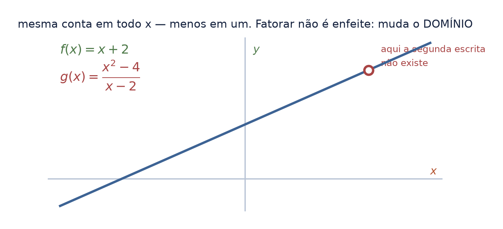
Seno, cosseno e tangente costumam chegar como botões de calculadora. No círculo de raio \(1\) eles são outra coisa: três comprimentos que se veem.
| \(\operatorname{sen} x\) | a altura do ponto — o segmento em pé |
| \(\cos x\) | o quanto ele avançou na horizontal — o segmento deitado |
| \(\operatorname{tg} x\) | a altura onde o raio esticado encontra a reta vertical do 1 |
| arco \(= x\) | o comprimento do pedaço de círculo. É isso que "radiano" quer dizer: o ângulo medido pelo arco que ele abre |
com os quatro desenhados lado a lado, dá para olhar e comparar três deles: a altura é menor que o arco, e o arco é menor que a tangente. Dois seminários adiante, essa desigualdade — obtida sem conta nenhuma — é o que prova o limite mais famoso do cálculo.
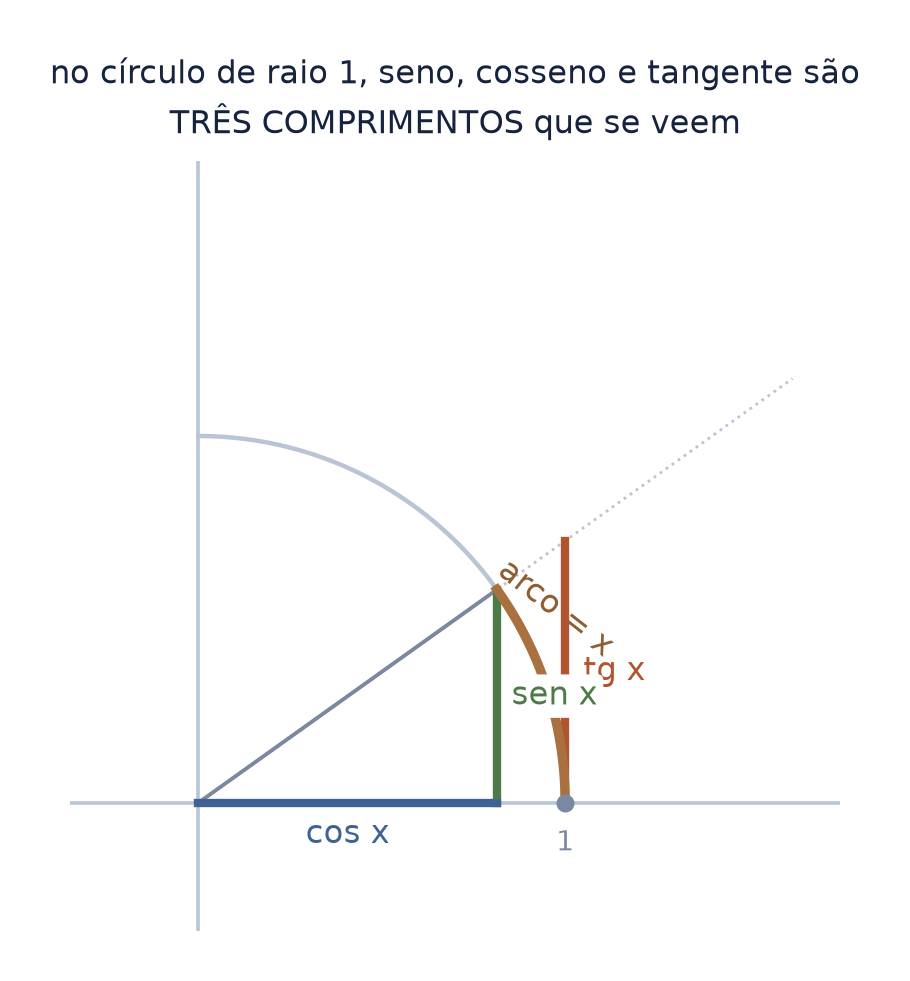
Toda função vira gráfico do mesmo jeito: o par vira ponto, para toda entrada — a Estação 1. O que muda é de onde sai o número: em \(x^2\) a regra é uma conta; no seno, a regra é um desenho. É por isso que o círculo aparece aqui, e não aparece lá.
Você já viu o gráfico do seno: uma onda, e acabou de ver o seno como uma altura no círculo. São a mesma coisa. No círculo a entrada é uma rotação; no gráfico, uma posição horizontal — e a saída, a altura, não muda no caminho. Isso é desenrolar.
por isso o traço da figura é horizontal: ele liga duas alturas iguais.
E aí duas coisas que se decoram deixam de precisar de memória:
| por que se repete | dar uma volta devolve o ponto ao mesmo lugar — a onda recomeça porque a volta acabou |
| por que não passa de 1 | é a altura de um ponto num círculo de raio 1; não há de onde tirar mais |
O mesmo desenho explica a assíntota da tangente: o ponto dela sobe pela reta tangente e foge quando o raio se aproxima da vertical — as duas retas ficam paralelas e deixam de se encontrar.
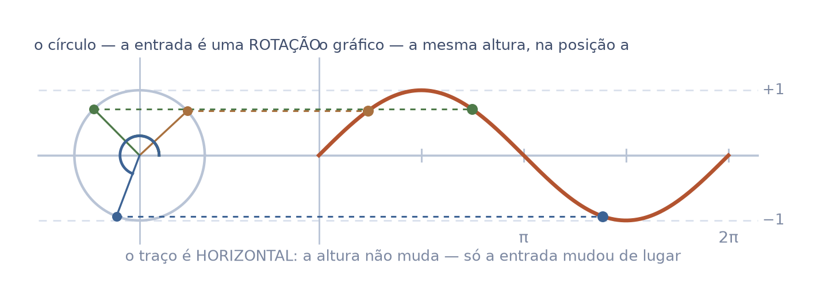
A palavra tangente nomeia dois objetos diferentes no arco de cálculo, e a confusão entre eles é silenciosa:
| a reta tangente | a reta que encosta numa curva em um ponto e segue a inclinação dela. É o problema que abre o próximo seminário |
| o segmento de tangente | um comprimento no círculo de raio 1 — o \(\operatorname{tg} x\) da folha anterior |
elas têm parentesco histórico e não são intercambiáveis. Quando uma folha disser "a tangente", pergunte qual: a reta que encosta, ou o comprimento no círculo.
Palavra que nomeia dois objetos é a armadilha mais barata de evitar — e a mais cara quando ninguém avisa.
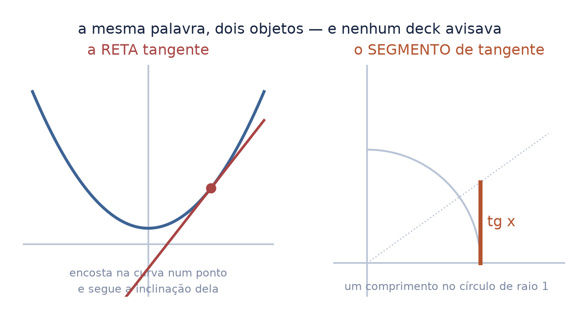
A folha anterior mandou desconfiar da palavra. Esta diz onde as duas se encontram — porque elas se encontram, e num lugar só.
Para medir o quanto uma reta sobe, ande 1 para a direita e veja quanto ela subiu. Esse número é a inclinação dela.
A reta tangente encosta na curva fazendo um ângulo \(\theta\) com o eixo \(x\). E quanto ela sobe, ao andar 1? Sobe exatamente \(\operatorname{tg}\theta\) — a mesma razão do círculo de raio 1, com o triângulo deitado sobre a curva em vez de dentro do círculo.
Quando o próximo seminário der nome a essa inclinação, ele a escreverá \(f'(x)\): a inclinação da reta tangente ao gráfico de \(f\) no ponto \(x\). O valor dela é o assunto de lá; o significado é este, e cabe aqui.
\[ f'(x) = \operatorname{tg}\theta \]
lê-se: "f linha de x é igual à tangente de teta" — onde \(\theta\) é o ângulo que a reta tangente faz com o eixo \(x\).
As duas tangentes não são homônimas: a reta dá o ângulo, e a razão do círculo dá o número. É a única vez que as duas se tocam.
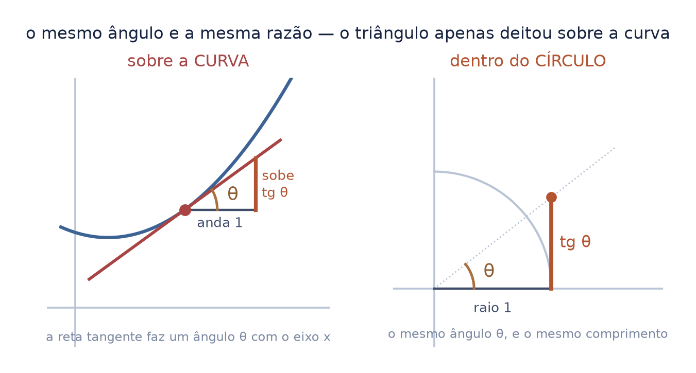
Este curso trata de imagem. E o desenho que você acabou de aprender a ler é, ele mesmo, uma imagem: uma grade de números, um valor por pixel.
A ponte funciona nos dois sentidos, e é o que os próximos três seminários vão cobrar:
ler um gráfico e ler uma imagem são a mesma habilidade. É por isso que este seminário abre o arco: sem ele, os três seguintes são conta; com ele, são coisas que se veem.
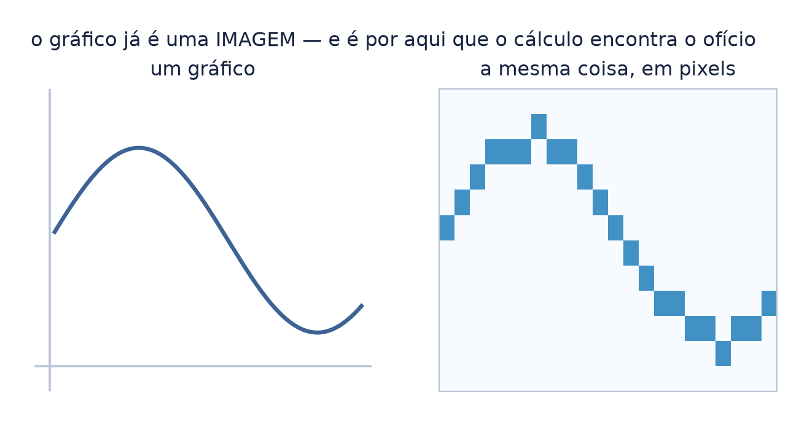
Este seminário não fica dentro do arco do cálculo: fica na dobradiça. Ele ensina cinco nós da base de uma vez — o par ordenado, os números reais, a função, e usa a trigonometria e a álgebra elementar para montar os dois primeiros.
E tudo o que ele constrói desemboca num lugar só: a função alimenta o limite, que é o nó onde o arco inteiro acontece. Quem sai daqui está a uma seta do cálculo.
o plano cartesiano aparece aqui pelo par ordenado, não por coordenada — coord_plano é do arco da geometria analítica, e a norma proíbe um arco cobrar o outro.
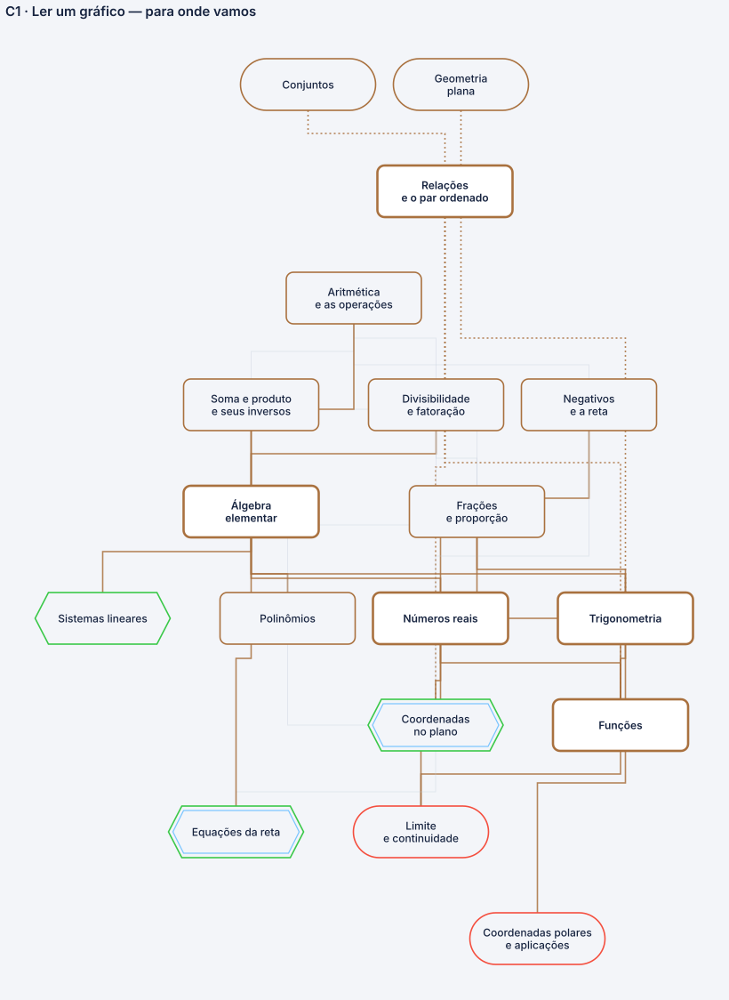
| função | a regra que, para cada entrada aceita, devolve uma saída |
| domínio | as entradas que a função aceita |
| imagem | as saídas que ela produz |
| par \((x, f(x))\) | uma entrada e a saída dela, juntas — é o que vira ponto |
| plano cartesiano | os dois eixos cruzados; onde se cruzam é a origem |
| gráfico | o desenho de todos os pares da função |
| crescente | andando para a direita, sobe |
| decrescente | andando para a direita, desce |
| constante | não muda de altura |
| buraco · salto · bico | os três defeitos do desenho |
| assíntota | a reta que o desenho encosta sem tocar |
| radiano | o ângulo medido pelo comprimento do arco que ele abre, no círculo de raio 1 |
a dívida não era dos alunos. Era da série — e está escrita aqui para não voltar a ser esquecida.
uma função é uma máquina; o par vira ponto; o rastro dos pontos é o gráfico — e o que o gráfico faz é o que a função faz.
Você sabe dizer, olhando: se sobe, se desce, se fica parada; se tem buraco, salto ou bico; se encosta numa reta sem tocar, ou se dispara. E sabe que seno, cosseno e tangente são comprimentos num círculo de raio um.
É pouco, e é exatamente o que faltava. Os três seminários seguintes não vão parar para explicar nenhuma dessas coisas — eles vão usá-las.
o cálculo não é difícil por causa das contas. É difícil quando se pede a alguém que enxergue um comportamento sem nunca lhe terem ensinado a olhar.